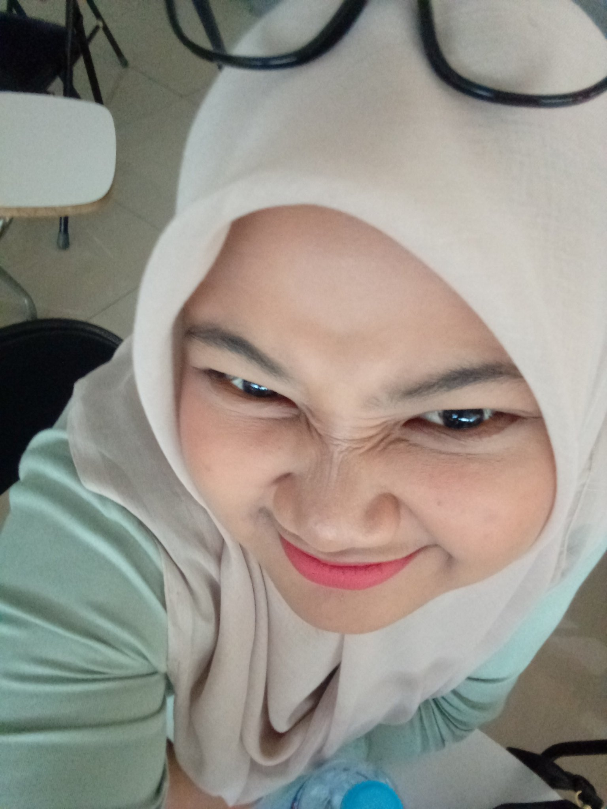

Inesya Radian Navishah
Graphic Designer
Halo! Aku Nesya, mahasiswa Teknik Komputer yang punya ketertarikan besar pada dunia desain. Bagiku, desain bukan cuma soal membuat sesuatu terlihat bagus, tetapi juga tentang bagaimana sebuah ide bisa diterjemahkan jadi visual yang punya makna.
Proyek & Keahlian
Graphic Design
Mengeksplorasi warna, tipografi, bentuk, dan komposisi untuk menciptakan desain visual yang menarik, komunikatif, dan memiliki makna.
Web Design
Merancang tampilan website yang clean, modern, dan nyaman digunakan dengan memperhatikan estetika serta pengalaman pengguna.
Visual Exploration
Mengeksplorasi negative space, permainan bentuk, dan konsep visual untuk menyampaikan cerita serta pesan melalui cara yang unik.
Creative Thinking
Menggabungkan kreativitas dan pola pikir teknologi untuk mengembangkan ide menjadi karya dan solusi digital yang relevan.